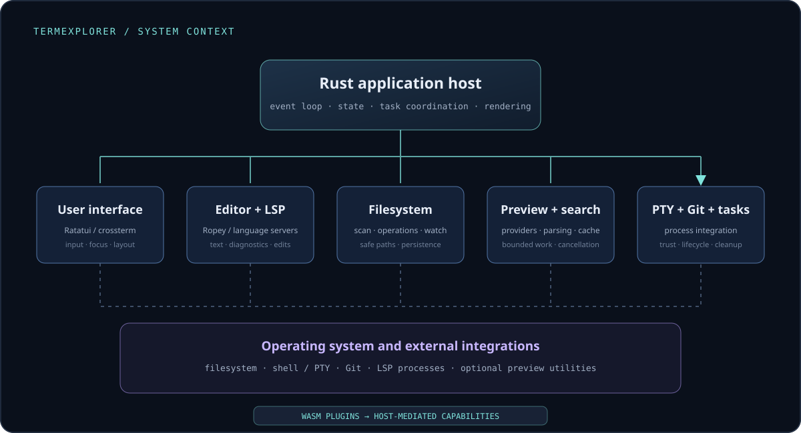

Input and commands
Keyboard and mouse events are routed to the active application context and its registered actions.
TermExplorer is a Rust TUI application with distinct subsystems for navigation, inspection, editing and developer workflows. This overview is a guide to the implementation; the repository remains the source of truth.
The application coordinates local files, a terminal process, language servers and optional system tools. Plugins interact through the host rather than receiving unrestricted access by default.

Interactive terminal applications need predictable input, state updates and rendering. Background operations should return bounded results and support cancellation.
Keyboard and mouse events are routed to the active application context and its registered actions.
Filesystem, search, PTY and other work is coordinated through the application's task and message model.
The UI reads application state and renders the workspace using Ratatui and the terminal backend.
The codebase uses Ropey for text storage and Unicode libraries for segmentation and display-width concerns. Byte offsets, scalar positions, grapheme boundaries and terminal columns must remain distinct.
| Representation | Used for | Important constraint |
|---|---|---|
| UTF-8 bytes | Storage and string slicing boundaries | Offsets must be valid UTF-8 boundaries. |
| Unicode scalars | Code-point-oriented text operations | A scalar is not necessarily a user-perceived character. |
| Grapheme clusters | Cursor movement and user-perceived characters | One cluster may contain multiple scalars. |
| Terminal cells | Rendering and horizontal layout | Wide glyphs occupy multiple cells; combining marks may occupy zero additional cells. |
The terminal subsystem uses a pseudo-terminal to connect an interactive shell to the TUI. The application must manage process lifetime, input/output, resize events and terminal restoration carefully.
WebAssembly provides a constrained execution environment, but security depends on the host APIs and resource limits as well as the runtime.
Validate component format and manifest data before loading a plugin. Reject malformed or unsupported inputs.
Every privileged host operation must verify the active plugin's approved capability and the validity of any supplied handle.
Bound execution, memory and output. Treat cancellation and plugin failure as normal lifecycle paths.
Wasm runtime isolation is not a substitute for OS-level isolation. Document the host API boundary and the limits of the protection.
The architecture documents and tests live in the repository and evolve with the implementation.